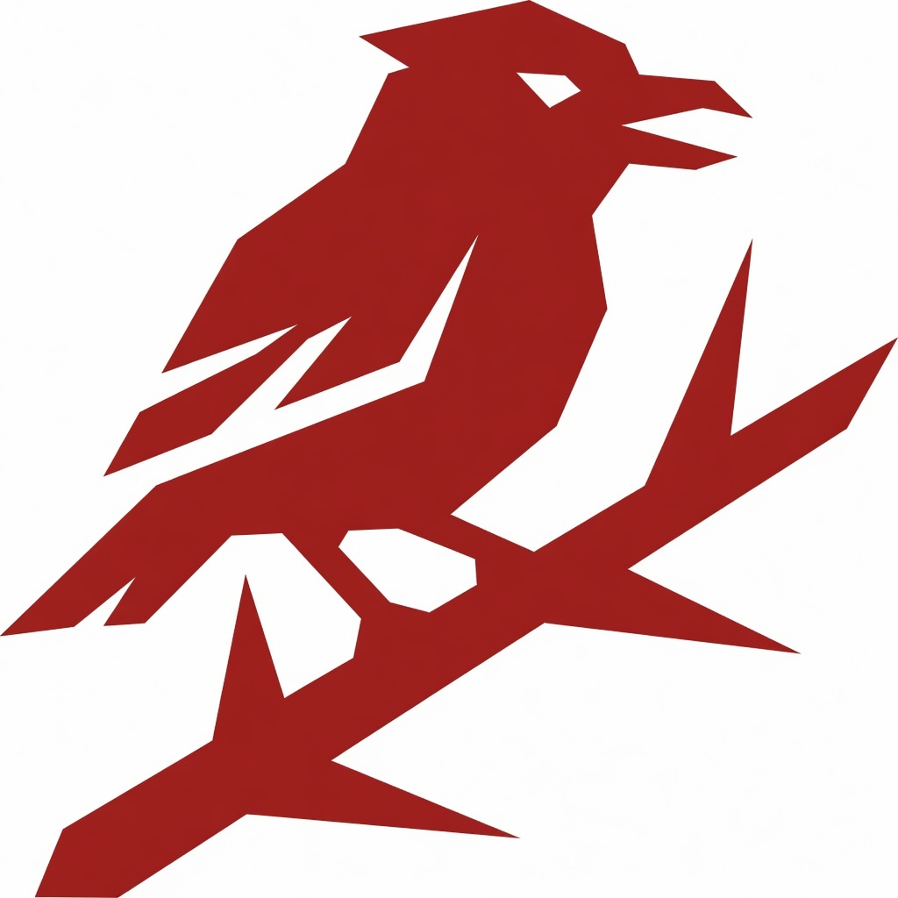
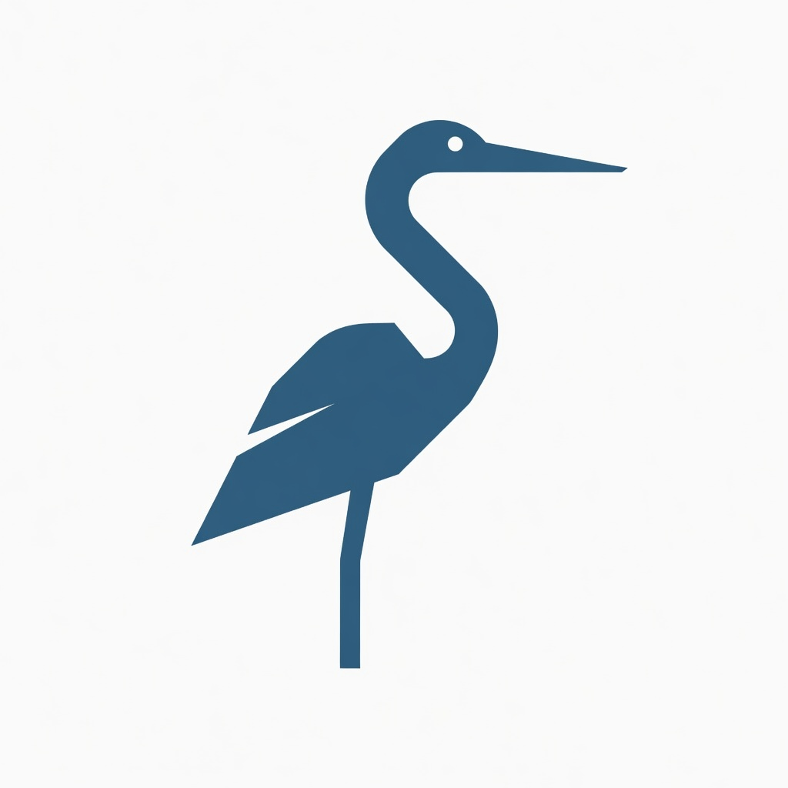

ShrikeOps
Hunts misconfigurations, CVEs, and deprecated APIs. Impales findings on a scored report before they hit production.
Scan with ShrikeOps. Observe with Heron Ops. Coordinate with Starling EX Community. Birds of a feather — self-hosted, no lock-in. Adapt and extend the flock under Apache-2.0.

Hunts misconfigurations, CVEs, and deprecated APIs. Impales findings on a scored report before they hit production.

Kubernetes MCP server for live pods, logs, events, and metrics. Formerly SteadyHelm. Calm observation, precise tools for any agent IDE.
Self-host package: Starling Lite facade + Heron Ops + ShrikeOps, one Helm chart. Planned CNCF donation under Warble stewardship today.
New to the flock? Contribute where the surface area is small and the feedback loop is fast. We adapt product code into clean Apache-2.0 packages — demos and scanners first.
Golden and bad Kubernetes manifests, Helm fixtures, CI scan demos. Perfect first PR: fix a fixture, improve a report sample, add a bad-case YAML.
Small Go CLIs/MCP servers. Docs, flags, readonly tests, and scan rules land quickly. Label: good-first-issue on each repo.
Landing copy, install snags, Office Hours notes, RFCs. No cluster required.
Platform patterns (OpenFaaS · Ray · Argo · KServe · MLflow · Airflow) and local k3s bootstrap for contributors. Frakma-X seeds here — separate from the CNCF agent-ops path.
Public Starling Lite endpoint (readonly) on the FRAKMA demo host — no install required:
https://starling-ex.frakma.io/lite/mcp
curl -sS -X POST https://starling-ex.frakma.io/lite/mcp \
-H 'Content-Type: application/json' \
-d '{"jsonrpc":"2.0","id":1,"method":"tools/list"}'
Self-host the flock on any CNCF-conformant cluster (kind, k3s, GKE, EKS, AKS).
git clone --recurse-submodules https://github.com/warble-tech/warble-army.git cd warble-army # Local MCP (no cluster write) make starling-lite ./bin/starling-lite --mode=readonly --transport=http --addr=:8822 # Or Helm CE chart helm upgrade --install starling-ex-ce ./charts/starling-ex-ce \ --namespace warble-army --create-namespace kubectl -n warble-army port-forward svc/starling-ex-ce 8822:8822 curl -sS http://127.0.0.1:8822/health
Docs: Starling EX CE · Flock brand map · Governance
Two wings, two foundations — do not mix the stories.
| Starling EX Community | Frakma-X | |
|---|---|---|
| Layer | Agent ↔ cluster ops (MCP, scan, remediate) | Platform / LLMOps openness |
| Path | CNCF donation planned (Sandbox draft ready) | Linux Foundation wing (forming) |
| Today | warbleoss.org + warble-army flock repos | frakma-oss patterns; commercial FRAKMA stays at frakma.io |
| Funding later | LFX / CNCF-aligned after Sandbox + community growth | LF program membership, grants, separate fund if chartered |
We do not claim “CNCF project” or “LF project” until the foundation accepts the project. Sandbox application draft: docs/cncf/SANDBOX_APPLICATION.md
Every Saturday · 7:00–8:00 PM IST · Discord voice. Live demos, roadmap Q&A, open mic stack reviews.
Propose changes, join agents / k8s / finops / devx WGs, or showcase what you built with the flock.
Community Edition stays free. We fund sustainment through enterprise products today and foundation-aligned crowdfunding when the project is ready.
Use CE · file issues · open PRs · join Office Hours · list your org in ADOPTERS.md. Stars and real adopters unlock foundation reviews.
After public repos, multi-contributor history, and community traction, we plan to list Starling EX Community on LFX Crowdfunding (Linux Foundation). Projects must be 100% open source; LF reviews applications before listing.
Multi-tenant SaaS, GitHub App, or managed FRAKMA — optional, never required for CE. → warblecloud.com · frakma.io/enterprise
CNCF Sandbox checklist and application draft live under the army umbrella. Help by hardening CE install, adopters, and multi-org maintainership.
CE is a complete self-host path: scan → observe → propose → optional guarded apply.
Warble Cloud multi-tenant control plane, billing, and private warble-core stay commercial.
Community stays free and self-hosted. No license phone-home.